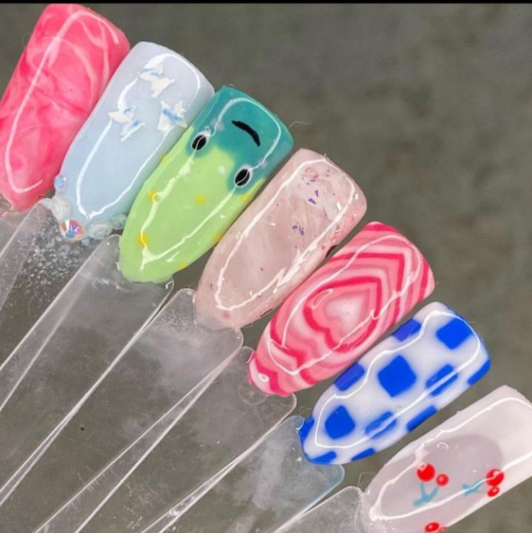
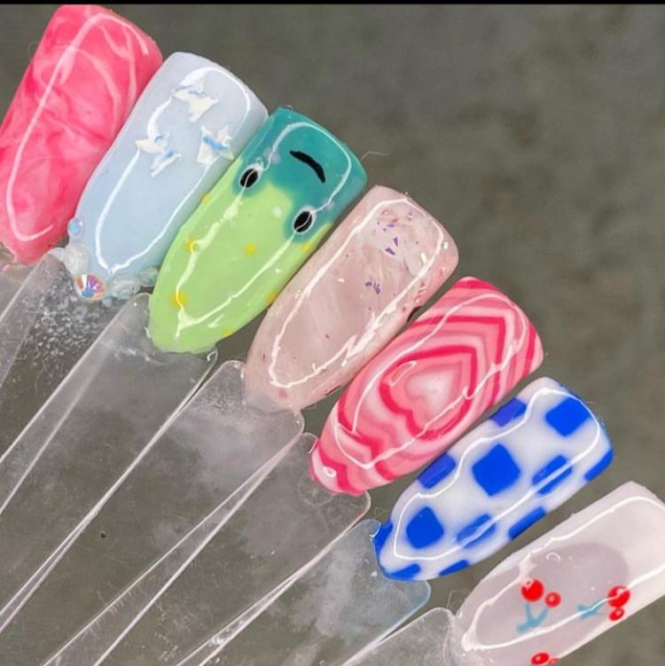

Exploratrice passionnée de l'art, de la danse et de la créativité
Mon amour pour les ongles va au-delà de la simple esthétique. C'est une passion artistique où chaque ongle devient une toile unique, une expression de ma créativité sans limites. Chaque détail, chaque couleur, et chaque motif sont soigneusement choisis pour compléter votre style et mettre en valeur votre beauté naturelle.
 


Rejoignez-moi dans cette aventure artistique des ongles,Suivez-moi sur instagramme pour découvrir mes créations uniques, des conseils de soins des ongles et bien plus encore.
La création artistique à travers le dessin est bien plus qu'une simple passion pour moi ; c'est une expression profonde de ma créativité et une façon de donner vie à mes idées. Chacune de mes œuvres représente un voyage artistique, une exploration de formes, de couleurs et de textures qui transcendent les simples lignes sur le papier.
Explorez mes créations artistiques et découvrez l'univers captivant du dessin en me suivant sur :
Mon amour pour le théâtre s'est épanoui à travers une expérience inoubliable au Festival du Conte. La scène, pour moi, représente un espace sacré où je peux donner vie à des histoires captivantes et partager des émotions avec le public. Cette passion m'a conduit à m'impliquer activement dans le développement du Festival des Clubs de Conte à Sfax.
Au cœur de ce projet ambitieux, l'objectif est de faire évoluer le festival en passant de 5 à 20 clubs représentés. Pour concrétiser cette vision, j'ai contribué à l'élargissement du réseau des clubs participants, à la formation et à l'encadrement des conteurs amateurs. Mon engagement s'est également manifesté à travers une campagne de communication renforcée, visant à promouvoir cette édition spéciale du festival.
Je crée des accessoires uniques, chaque pièce raconte une histoire de style et d'élégance.
"A women needs ropes and ropes of pearls "Coco Chanel, Vogue.visitez mon petit projet daccessoires
Je crée des merveilles avec de la pâte à modeler. Chaque création raconte une histoire unique et colorée.
"La créativité, c'est l'intelligence qui s'amuse." - Albert Einstein
Les attrape-rêves que je réalise capturent les rêves et la magie. Chaque fil tissé raconte une histoire mystique.
"Chaque rêveur a besoin d'un attrape-rêves." - Proverbe amérindien
En tant que passionné de maquillage artistique, j'exprime ma créativité à travers chaque coup de pinceau. Chaque œuvre est une toile sur laquelle je peux jouer avec les couleurs, les formes et les textures pour créer quelque chose de vraiment unique.